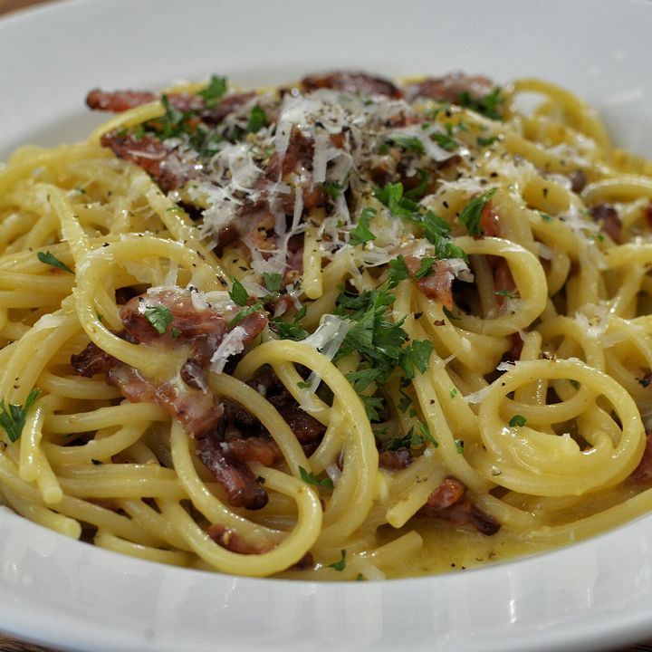

Zurück zur Übersicht
Spaghetti Carbonara
Die römische Art: ohne Sahne, nur Ei, Pecorino, Pfeffer und knuspriger Guanciale. Das Geheimnis ist das Nudelwasser.
- Zeit
- 25 Min.
- Schwierigkeit
- leicht
- Kategorie
- Pasta
- Ernährung
- mit Fleisch
Zutaten
Portionen
- 200 gSpaghetti
- 80 gGuanciale oder Pancetta
- 2Eigelb
- 1Ei
- 50 gPecorino Romano, fein gerieben
- Schwarzer Pfeffer, frisch gemahlen
- Salz fürs Nudelwasser
Zubereitung
- Nudelwasser aufsetzen und kräftig salzen. Guanciale in Streifen schneiden.
- Guanciale in einer kalten Pfanne langsam auslassen, bis er knusprig ist. Pfanne vom Herd nehmen.
- Eier und Eigelb mit dem Pecorino und reichlich Pfeffer zu einer dicken Creme verrühren.
- Spaghetti al dente kochen. Eine Tasse Nudelwasser abschöpfen.
- Nudeln zum Guanciale geben, kurz schwenken. Pfanne muss lauwarm sein, nicht heiß.
- Eiercreme und einen Schuss Nudelwasser zugeben und zügig rühren, bis eine glänzende Soße entsteht. Sofort servieren.
Tipp: Wird die Soße krümelig, war die Pfanne zu heiß. Mit etwas Nudelwasser lässt sie sich meist noch retten.